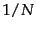
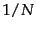
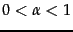
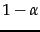

Consider a random surfer who begins at a web page (a node of the web graph) and executes a random walk on the Web as follows. At each time step, the surfer proceeds from his current page A to a randomly chosen web page that A hyperlinks to. Figure 21.1 shows the surfer at a node A, out of which there are three hyperlinks to nodes B, C and D; the surfer proceeds at the next time step to one of these three nodes, with equal probabilities 1/3.
As the surfer proceeds in this random walk from node to node, he visits some nodes more often than others; intuitively, these are nodes with many links coming in from other frequently visited nodes. The idea behind PageRank is that pages visited more often in this walk are more important.
What if the current location of the surfer, the node A, has no out-links? To address this we introduce an additional operation for our random surfer: the teleport operation. In the teleport operation the surfer jumps from a node to any other node in the web graph. This could happen because he types an address into the URL bar of his browser. The destination of a teleport operation is modeled as being chosen uniformly at random from all web pages. In other words, if  is the total number of nodes in the web graph
is the total number of nodes in the web graph , the teleport operation takes the surfer to each node with probability . The surfer would also teleport to his present position with probability .
, the teleport operation takes the surfer to each node with probability . The surfer would also teleport to his present position with probability .
In assigning a PageRank score to each node of the web graph, we use the teleport operation in two ways: (1) When at a node with no out-links, the surfer invokes the teleport operation. (2) At any node that has outgoing links, the surfer invokes the teleport operation with probability  and the standard random walk (follow an out-link chosen uniformly at random as in Figure 21.1 ) with probability , where  is a fixed parameter chosen in advance. Typically,
is a fixed parameter chosen in advance. Typically,  might be 0.1.
might be 0.1.
In Section 21.2.1 , we will use the theory of Markov chains to argue that when the surfer follows this combined process (random walk plus teleport) he visits each node  of the web graph a fixed fraction of the time
of the web graph a fixed fraction of the time  that depends on (1) the structure of the web graph and (2) the value of
that depends on (1) the structure of the web graph and (2) the value of  . We call this value
. We call this value  the PageRank of
the PageRank of  and will show how to compute this value in Section 21.2.2 .
and will show how to compute this value in Section 21.2.2 .